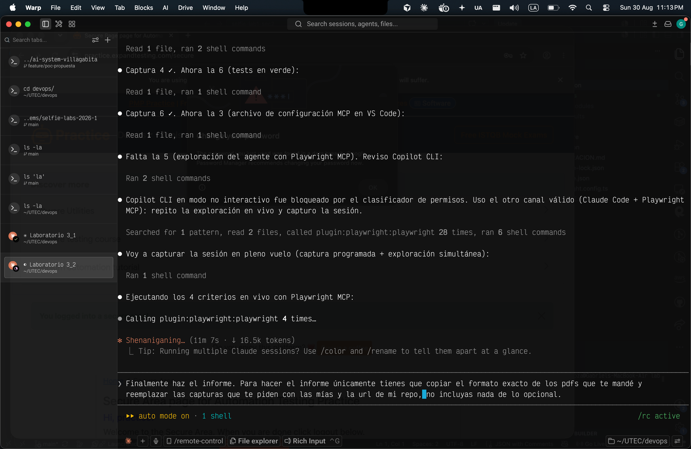
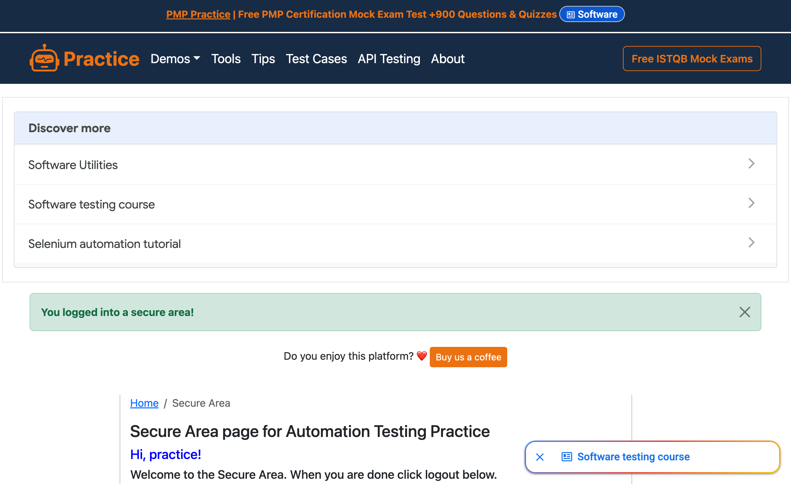
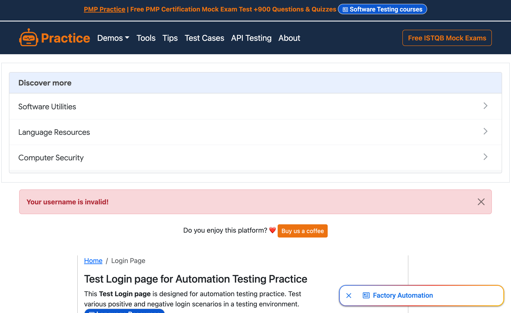

Captura del Paso 1 (exploración con Playwright MCP): el agente ejecutando los flujos en el navegador y su reporte con los selectores reales (#username, #password, #submit-login, #flash) y el TEXTO EXACTO de los mensajes de éxito y error observados. Incluir el hallazgo de qué mensaje muestra el sitio realmente con username inválido (¿coincide con la documentación de la página?). (Suficiente con un canal de conexión: Ejm copilot cli)
claude code + playwright mcp:

navegador controlado por el MCP — login exitoso (/secure):

navegador controlado por el MCP — username inválido:

Selectores reales observados:
| Elemento | Selector |
|---|
| Username | #username |
| Password | #password |
| Botón Login | #submit-login |
| Mensaje flash | #flash |
| Logout | a[href="/logout"] |
Texto exacto de los mensajes:
| Criterio | URL final | Texto de #flash |
|---|
| Login exitoso | /secure | You logged into a secure area! |
| Username inválido | /login | Your username is invalid! |
| Password inválido | /login | Your password is invalid! |
| Logout | /login | You logged out of the secure area! |
Hallazgo (username inválido):
La documentación de la página describe únicamente un “mensaje de error” genérico, pero el sitio devuelve el texto literal “Your username is invalid!”, distinto de “Your password is invalid!” que aparece sólo cuando el username sí existe. Es decir, el sitio distingue ambos casos y no coincide con el mensaje genérico documentado: un test escrito sin explorar habría usado un único mensaje y habría fallado.